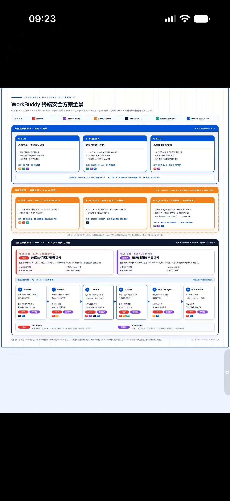

跨界后能多做什么？
身份、内存、文件、网络、设备权限由谁强制约束。
先识别真实保护域：谁掌握权限，什么机制执行隔离，
哪些模块共享同一个失陷范围。当前聚焦边界，风险评估暂缓。
身份、内存、文件、网络、设备权限由谁强制约束。
本地、远程服务、租户、管理员的控制权如何变化。
外部内容与用户指令的信任差异，本身不构成资源隔离。
全部为待验证候选边界。设备名称不决定隔离强弱；混合部署需连接两端，并补充远程服务、更新、凭据、存储与日志的边界。
阅读完整环境边界模型 v0.2 ↗示意图用于识别逻辑关系，不表示实际网络拓扑。边界是否存在、如何执行，需在具体部署中验证；模型请求、结果与工具返回可能双向跨界。
旧编号主要描述信息流，不能直接证明权限隔离；需映射到环境中的实际域与执行机制。
分数 = 可能性 × 最大影响。它用于优先级排序，不代表统计概率。
影响分别评估保密性、完整性、可用性、业务财务与物理安全，保留分项并取最大值。
初始时间窗为部署后 12 个月，待具体项目确认。金额、停机时长与数据范围需由部署负责人量化；没有证据时保持“待评估”。剩余风险只有在控制实现并验证后才能重评。
承接上方设计推导，采用原图的三层纵深防御与 Agent Loop 双插件结构，形成“运行时判定、执行层约束、既有防护联动”的部署方案。
管理面下发身份、准入及策略；各执行点记录任务与操作事件。IOA、EDR、EDLP等能力通过适配接口接入。
沿用原图：EDR + 零信任网关 + EDLP
接收终端文件、进程及异常行为事件，关联 Agent 任务。
统一模型、MCP与业务API的目标、身份和调用策略。
检查模型请求、工具输出及发送目标，结合原图办公通道防护。
沿用原图：执行隔离 + 接入管理
以受限身份执行文件、网络和命令操作。
登记来源、版本、完整性与运行所需能力。
登记Agent、用户、租户及服务身份，签发有限任务权限。
沿用原图：在 Agent Loop 中接入
检查上下文、模型请求、工具参数、结果与持久化内容；执行脱敏、目标限制和敏感信息阻断规则。模型直接获取长期凭据的场景优先改为凭据代理。
检查外部内容、Skill与工具请求的风险，结合任务授权输出允许、拒绝或待确认。语义检测用于辅助判定，操作限制由工具代理及资源侧落实。
Agent接入双插件，本地工具代理控制文件、命令和网络；浏览器会话单独授权。可接IOA、EDR及办公DLP。
租户与任务身份贯穿队列、状态和工具服务；工作负载隔离，业务端授权，云凭据代理和共享预算。
有OS设备可部署本地执行代理；MCU将复杂判定放在网关，设备端保留指令校验、限值及必要保护。远程代理不能替代设备物理保护。
这是方案设计与验收计划，尚未实现或验证对应安全能力。最终优先级仍由实际部署的边界及风险评估决定；组件故障时按操作类型定义拒绝、暂停或安全降级行为。
